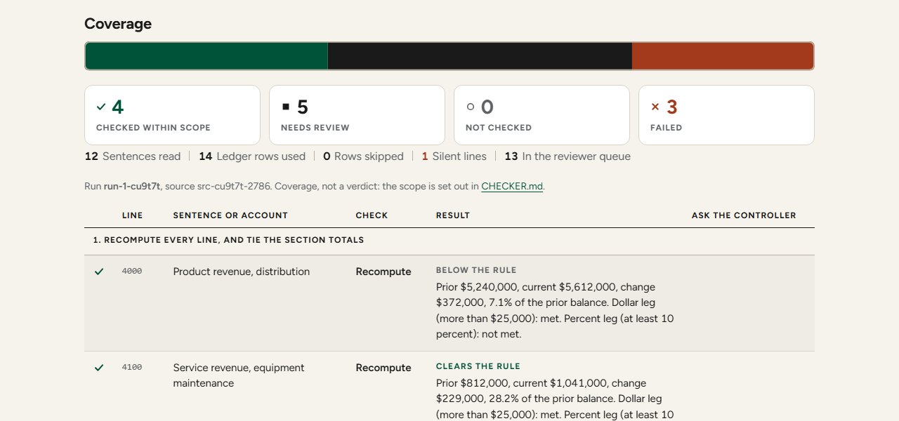

Second Pass Checker
Paste a ledger and the memo somebody drafted about it, and every figure, every direction word and every account nobody mentioned is settled before a reviewer spends an hour on it.
- 1Paste the ledger.Account, prior balance, current balance, in whatever shape your system exports.
- 2Paste the memo.The drafted commentary, however it is numbered.
- 3Read the queue.What the checks could not settle, with the two questions only a person answers.

Tabs, commas or aligned columns, one account per line. Dollar signs, thousands commas and (parentheses) for negatives are all read, and a header row is ignored.
Free text. A line starting S1., 1. or (a) is kept whole; anything else is split into sentences.
Parse preview
What the ledger reader found, before anything is checked. Confirm the two period columns if the guess is wrong.
Naming, ratios and the boundary rule
Account numbers, with plus, minus, times, divide and parentheses. The dollar rule is more than the floor and the percent rule is at least it, both decided on unrounded values.
Nothing has been checked yet. Paste both panes, or load a case, and run it.
Previous runs
Changing an input clears the statuses and stamps the next run with a new identifier. Earlier runs are kept here.
The two prompts
Prompt 1, draft the memo
Hands the ledger and the threshold to the drafting tool and fixes the shape of every line: account number, prior, current, change, percent, direction, one reason, and the source that reason came from. Lines below the threshold get one closing sentence.
Prompt 2, second pass
Hands over the ledger, the memo and only the sentences that passed the arithmetic and the direction, with the two judgment questions and an instruction not to recompute what the checker already computed. Run the checker first, or this one has nothing to carry.
Run it before anybody reads the memo. The mechanical checks settle what the numbers settle, and the reviewer's time then goes to the queue: the driver, and the period.
Everything you paste is processed by the script in your own browser. This page is served from GitHub Pages and loads one Google font; anything you copy into another AI service goes to that service under its terms.